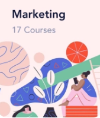
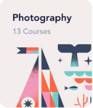

<ion-header [translucent]="true">
  <ion-toolbar>
    <ion-button  class="headerButtonColors">
          <ion-icon  color='blue'name="menu-outline"></ion-icon>
    </ion-button>

    <ion-title >
    </ion-title>
    <ion-button  class="headerButtonColors" slot="end">
          <ion-icon color="red" name="person-add-outline"></ion-icon>

    </ion-button>

  </ion-toolbar>
</ion-header>

<ion-content [fullscreen]="true">
  <div class="parent1">
    <p class="introText">Hey Aditya</p>
    <p class="courseText">Find a course you want to learn</p>

    <div class="searchBox">
      <ion-icon style="font-size: 28px;" name="search"></ion-icon>
      <input placeholder="Search for everything">
    </div>


    <div class="categDisp">
      <p class="catIntro">Categories</p>
      <p class="sAll" >See All</p>
    </div>

    <ion-grid >
      <ion-row>
        <ion-col size="6">
          
          <!--  -->
    
        </ion-col>
        <ion-col size='6' >
          
          
          
    
        </ion-col >
    
      </ion-row>
    
    </ion-grid>
  </div>

 
 <ion-fab vertical="bottom" horizontal="end" slot="fixed">
  <ion-fab-button (click)="openSpitSite()">
  <ion-icon name="globe-outline"></ion-icon>
  </ion-fab-button>
  </ion-fab>
</ion-content>
